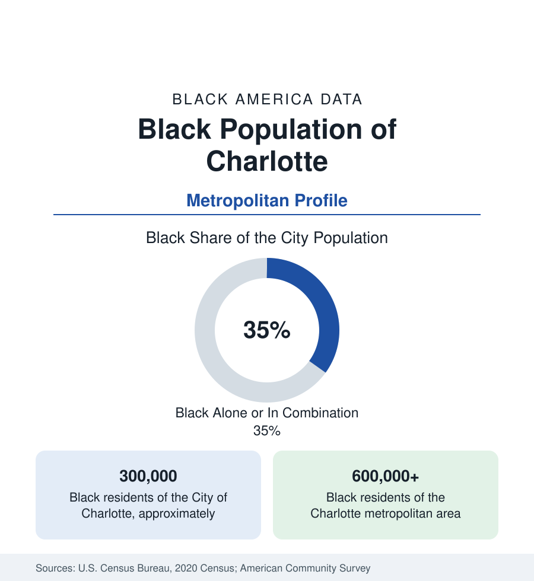

Black Cities
Black Charlotte: The Banking City's Third
Charlotte holds about 300,000 Black residents in the city and more than 600,000 across the metro — a banking-boom population between the old Brooklyn and the new suburbs. The census profile.

Charlotte holds about 300,000 Black residents within the city — roughly a third of its 875,000 people — and more than 600,000 across the metropolitan area, about a quarter of the region. North Carolina's largest city built its Black population in layers: a historic community centered on the Brooklyn neighborhood and the Biddleville district around Johnson C. Smith University; a banking-boom professional class drawn since the 1990s; and one of the most suburbanized Black populations in the South. This article profiles the population in the census data.
Brooklyn, Biddleville, and What Was Lost
Charlotte's historic Black center was Brooklyn, in the city's Second Ward: a self-contained district of homes, businesses, churches, schools, and the offices of Black professionals, built from the late nineteenth century. In the urban renewal programs of the 1960s the city demolished Brooklyn — hundreds of buildings and well over a thousand households displaced — replacing it with government and commercial development; the district survives in the historical record, in its displaced families' associations, and in the city's official reckonings with the loss. The surviving historic core is Biddleville and the west side around Johnson C. Smith University, the HBCU founded in 1867, where the Black geography of the modern city begins: the west and northwest corridors, along Beatties Ford Road, remain the center of Black Charlotte.
The Banking Boom's Black Class
Charlotte's transformation into the nation's second banking center — headquarters of Bank of America and the East Coast hub of Wells Fargo, with a finance sector employing well over a hundred thousand in the metro — recruited a Black professional population on a scale unusual for a Southern city of its history. Finance, insurance, and the corporate services around them employ Black Charlotteans in the management and professional tiers at rates that show in the metro data: Charlotte's Black median household income runs among the strongest of the Southern metros in this section, and its Black college-educated population grew faster than the city's overall across the boom decades. Charlotte Douglas's airport hub and the logistics belt added the second employment pole, on the region's southwest and airport corridors where Black working-class suburbs grew alongside.
The Suburban Pattern
Charlotte's Black population is among the most suburbanized in this section: the majority of the metro's Black residents live outside the city itself, in Mecklenburg County's unincorporated growth areas and in the ring counties — Gaston, Cabarrus (Concord, Kannapolis), Union, and across the state line in York County, South Carolina (Rock Hill, Fort Mill's edge). University City, the northeast district around UNC Charlotte, is a majority-minority suburban center of apartments and young professionals; the east side holds the region's immigrant corridors, layering Latino, Asian, African, and Caribbean communities through the same tracts. Black suburbanization here follows the section's general arithmetic — higher incomes, newer housing, longer commutes — at a Southern scale matched only by Atlanta's.
Composition and Change
The estimates show one of the faster-growing Black metros in the reference: in-migration from the Northeast and Midwest (the reverse-migration current at full strength), natural increase in a comparatively young population, and growing African and Caribbean communities. The internal range is the caution the metro averages require: the west side's historic districts record incomes near half the county median while the banking suburbs double it, and the city's own analyses of economic mobility — Charlotte ranked at the bottom of a famous fifty-city mobility study in the past decade, a finding that reorganized local philanthropy — keep the distribution's two ends in the same civic conversation.
Reading the Charlotte Numbers
Johnson C. Smith's presence also makes the west side the metro's Black institutional anchor beyond education — its campus hosts the region's Black cultural archive and its surrounding neighborhoods hold the city's densest concentration of Black-owned businesses, in the survey counts, along the Beatties Ford corridor.
Charlotte completes the North Carolina pair in this section — the state profile's research-triangle growth and this profile's banking growth — and reads as the New South's test case: a metro that recruited a Black professional class at scale while its historic Black district survives only in memory and its mobility data rank last. Both facts are in the census record, and the profile holds them together because the population does.
More in Black Cities
Black Atlanta: Population, Distribution, and Growth of a Black Metropolis
Metro Atlanta holds more than two million Black residents — roughly one in three, second only to New York. The suburban distribution, migration history, and composition of Black Atlanta in the census data.
Black New York: The Largest Black Population in America
The New York metropolitan area holds about 3.4 million Black residents — more than any metro in the nation — and the city itself about two million. The census profile.
Black Washington: The District and the Metro
The Washington metro holds about 1.6 million Black residents, and the District itself — long a majority-Black city — now records a Black share near 41 percent. The census profile.
Source: U.S. Census Bureau, 2020 Census; American Community Survey; Population Estimates Program.